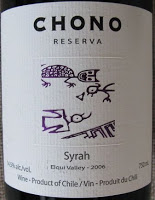
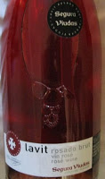
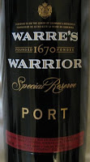

Today, I would like to share with you some information from my recent wine course. In this complex world of wine, wine can be broken down into three types wine, light, sparkling or fortified. These three types are further broken down by the style of wine, such as red, white or rosé...then either dry, medium or sweet, and finally light, medium or full bodied. I have selected a sample of each type for you to try
LIGHT WINE
The first type is LIGHT WINE: The majority of wines fall in to this category. These are what you normally think of when someone says 'wine'. They are still, that is not sparkling or fizzy, and are between 8 - 15% alcohol by volume. Many light wines are named after the region they are produced in; such as Bordeaux and Burgundy from France, Rioja from Spain and Chianti from Italy. New world wines from countries like Australia, Chile, New Zealand, and Canada are often labelled with the name of the grape, such as Chardonnay or Syrah.
SPARKLING WINE
The second type of wine is SPARKLING WINE: These are wines where bubbles of carbon dioxide gas have been trapped in the wine. Often seen as the wine of celebration, it's best known (and usually most expensive) example is Champagne from France. Other examples are Cava from Spain (see below) and Asti from Italy (which, by the way, is sweet), but sparkling wine is made all over the world. 'Champagne'is one of the good wine and one to start with at first. hope you like it and enjoy with your group.... Cheers..!!!
FORTIFIED WINE
The third type of wine is FORTIFIED WINE: These are also known as 'liqueur' wines, which means that the wines have had extra alcohol added to them and there for have higher alcohol levels of 15 - 22%. Examples of fortified wines include Port from Portugal. With Port, the fermentation of the wine is halted with the introduction of alcohol part way through, so it remains sweet. Sherry from Spain on the other hand is fermented out to dry and then has the alcohol added. Hence, you can get either dry or sweet Sherry
